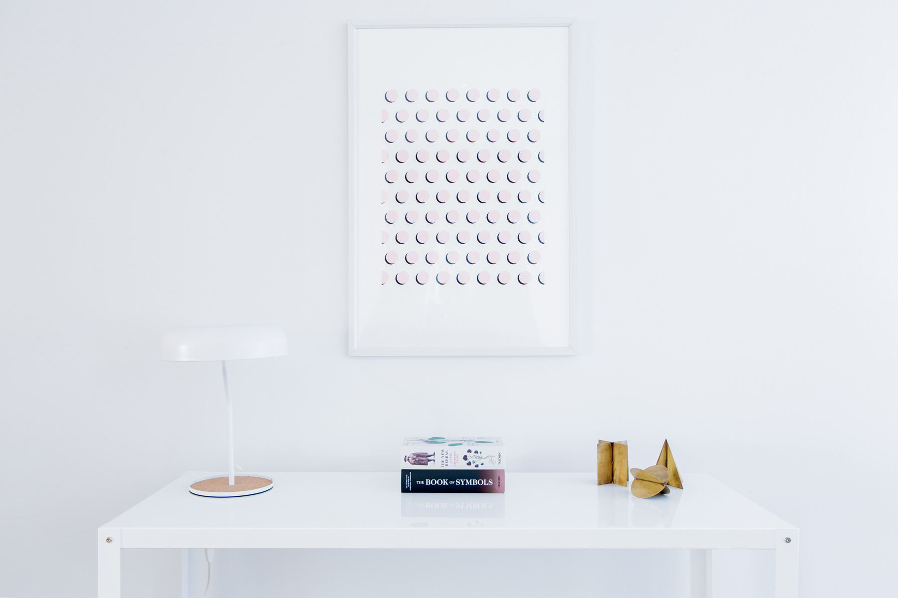
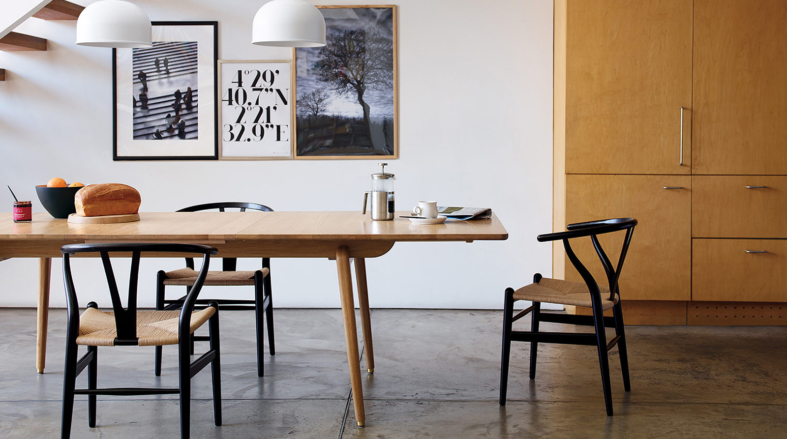
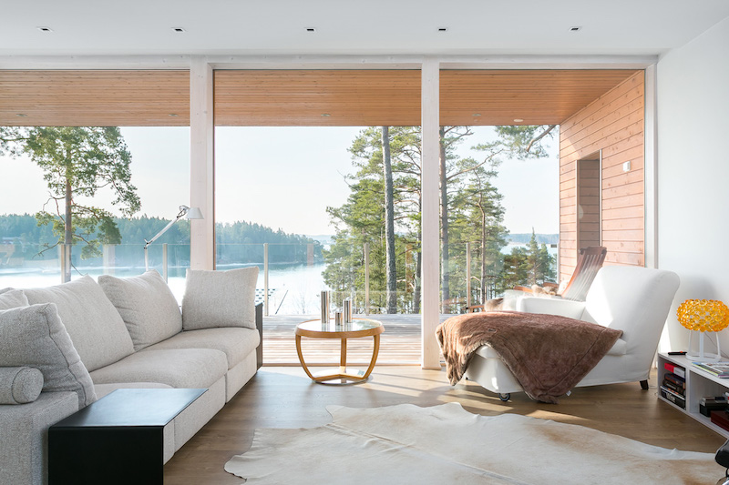
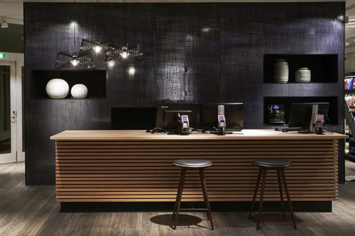
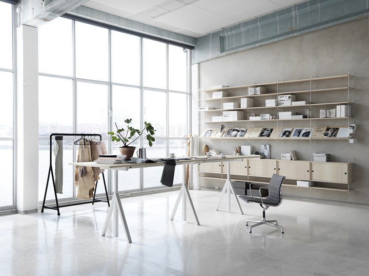

Interior Design
The profession of interior design is just over 100 years old. In these hundred years, what began as the art of decorating,
embracing form and function, has evolved by leaps and bounds into today’s world of highly specialized areas
of interior design that require years of study and experience. In the early 1900’s, the term “Interior Decorator”
was first used in America. Most decorators at the time had no academic credentials, but the best of them
had a combination of good taste, common senses, and natural talent to interpret and address the issues, such
as scale and proportion. Elsie de Wolfe became the first Interior Decorator to be given a design “commission.”
In 1913, Elsie de Wolfe published the first interior design book, “The House in Good Taste.” Dorothy Draper
was the first documented commercial Interior Decorator, establishing her design firm in 1923.

In 1954, the Brooklyn Museum held its "Design in Scandinavia" exhibition, and a fashion for "Scandinavian Modern" furniture
began in America.Scandinavian design is by no means limited to furniture and household goods. It has been
applied to industrial design, such as of consumer electronics,mobile phones,and cars.

Danish Design
Danish Design is a style of functionalistic design and architecture that was developed in mid-20th century. Influenced by
the German Bauhaus school, many Danish designers used the new industrial technologies, combined with ideas
of simplicity and functionalism to design buildings, furniture and household objects, many of which have
become iconic and are still in use and production, such as Arne Jacobsen's 1958 Egg chair[11] and Poul Henningsen's
1926 PH-lamps.[12] After the Second World War, conditions in Denmark were ideally suited to success in design.
The emphasis was on furniture but architecture, silver, ceramics, glass and textiles also benefitted from
the trend. Denmark's late industrialisation combined with a tradition of high-quality craftsmanship formed
the basis of gradual progress towards industrial production

Finnish Design
Finnish design spans clothing, engineering design, furniture, glass, lighting, textiles, and household products.The "Design
from Finland" mark was created in 2011.[15] Finland's Design Museum (formerly called the Museum of Art and
Design) has a collection founded in 1873, while Helsinki's University of Art and Design, established in 1871,
now forms part of Aalto University.

Icelandic Design
Design in Iceland is a relatively young tradition, starting in the 1950s but now growing rapidly. The country's limited options
for manufacturing and its constrained choice of materials have both forced designers to be innovative, though
wool remains a staple material, whether felted or knitted. Iceland's Museum of Design and Applied Art, aiming
to record Icelandic design from 1900 onwards, opened in 1998.[18] The Iceland Academy of the Arts was also
founded in 1998, soon followed by its Faculty of Architecture and Design, which has promoted a distinctively
Icelandic character in the nation's design

Swedish Design
Swedish design is considered minimalist, with an emphasis on functionality and simple clean lines. This has applied especially
to furniture. Sweden is known for traditional crafts including glass and Sami handicrafts. Swedish design
was pioneered by Anders Beckman (graphics), Bruno Mathsson (furniture), Märta Måås-Fjetterström and Astrid
Sampe (textile), and Sixten Sason (industrial). Organisations that promote design in Sweden are Svensk Form,
the Swedish society of crafts and design, founded in 1845; the Swedish Industrial Design Foundation, known
as SVID; the Swedish Arts Council; and the Swedish Centre for Architecture and Design (known as ArkDes) on
the island of Skeppsholmen in Stockholm, beside the modern art museum

"Choosing art and objects is an art in itself. It's about recognizing what is important in society, and where our civilization
is going." - Axel Vervoordt